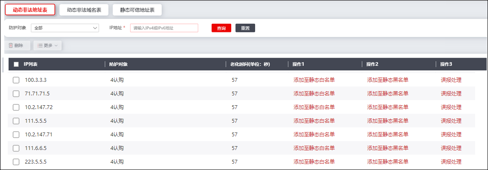
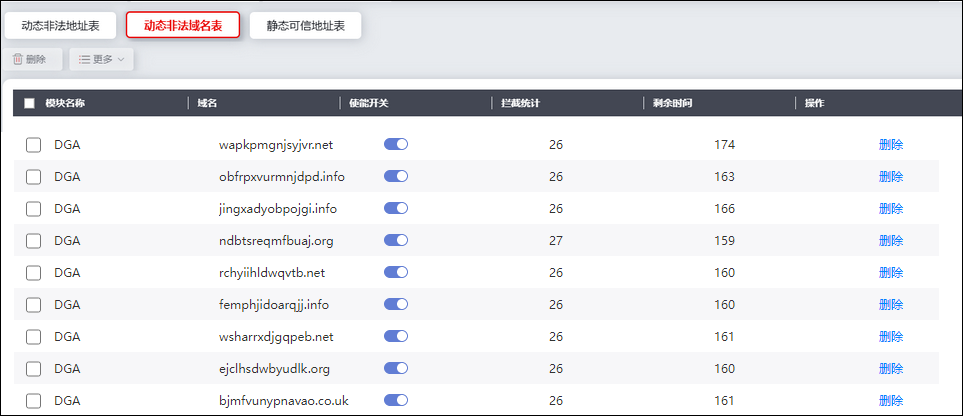
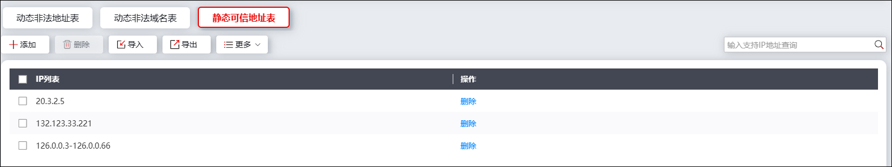
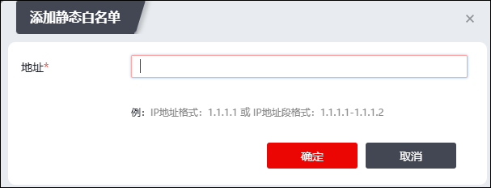

DNS安全模块提供动态防护列表，供管理员配置和查看。
防护列表主要分为两类，动态表和静态表；其中静态表是由管理员手动编辑和配置的可信地址表，功能接近白名单，所有静态可信地址表中的IP地址不受DNS安全策略限制，支持删除操作；动态表是NGFW根据已配置的DNS安全策略动态生成的，功能接近动态黑名单，管理员只能进行删除，不能进行手动添加。
下面进行分别介绍。
| 步骤1 | 选择 ，默认激活“动态非法地址表”页签，界面如下图所示。 |

界面展示NGFW检测出的非法地址项（即命中配置的DNS服务端防护策略（且动作必须配置为黑名单）生成的数据），详细信息包括IP地址，对应的防护对象，该项剩余的老化时间等。点击非法地址所在项的“添加至静态白名单”、“添加至静态黑名单”和“误报处理”可以执行对应操作。界面上方为搜索区域，可以通过选择防护对象、输入IP地址进行筛选。
| 步骤2 | 查看动态非法域名表 |
激活“动态非法域名表”页签，界面如下图所示。

界面展示了NGFW检测出的非法域名项（即命中配置的DNS用户端防护策略（策略必须开启DGA检测）生成的表项），详细信息包括其检测攻击的模块来源、域名、拦截次数和剩余时间等；使用使能开关可以控制该非法域名项的状态。
| 步骤3 | 配置静态可信地址表 |
激活“静态可信地址表”，界面如下图所示。

点击“添加”，即可在弹出窗口中配置静态白名单项，界面如下图所示。

输入IP地址后点击【确定】即可保存相关配置，加入静态可信地址表的IP地址将不再受到检测，直接放行。
除此以外，点击【导入】可以批量导入.csv格式的白名单列表，点击【导出】可以导出当前配置。